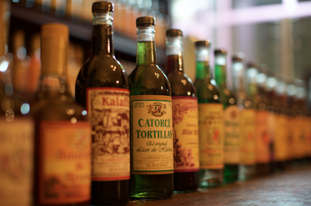
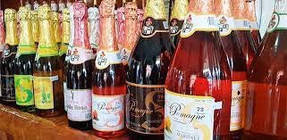
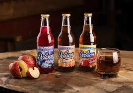
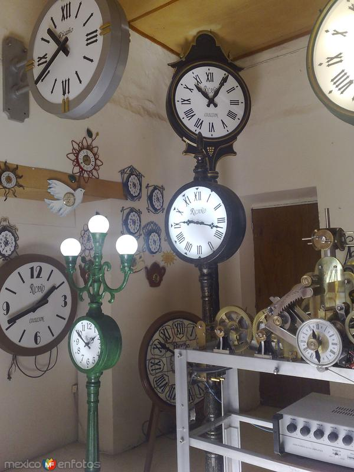
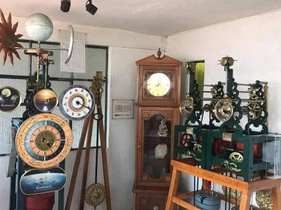
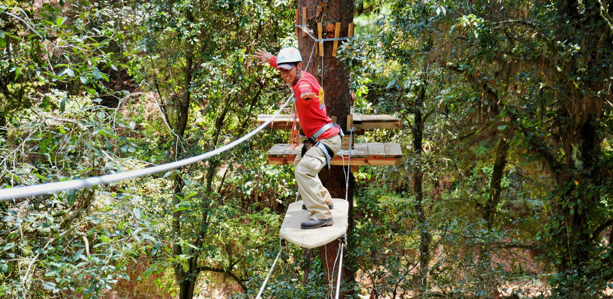
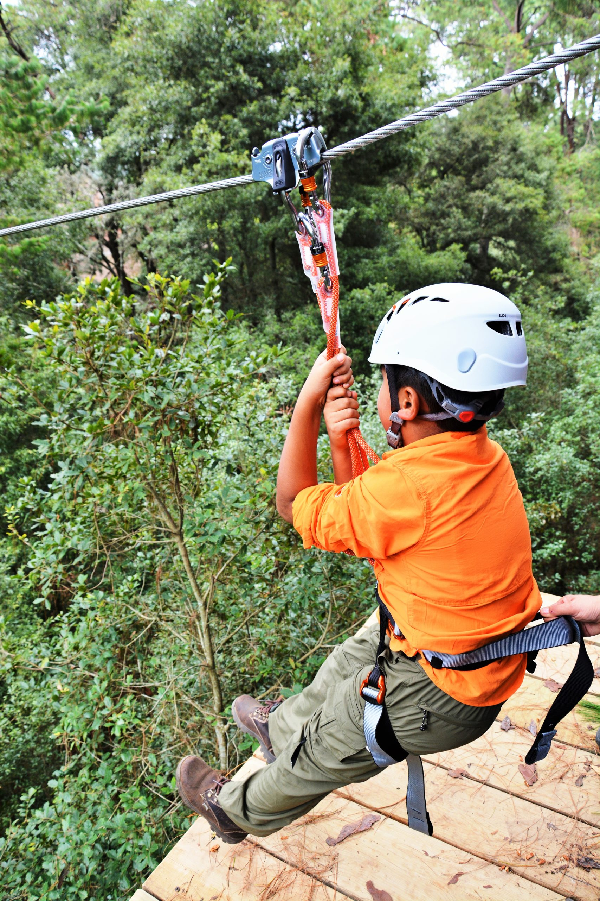
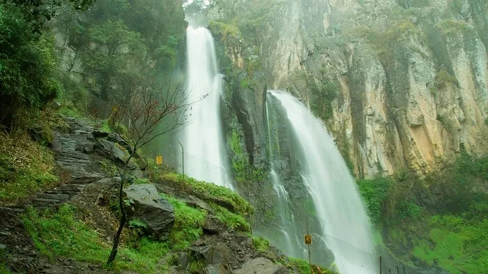
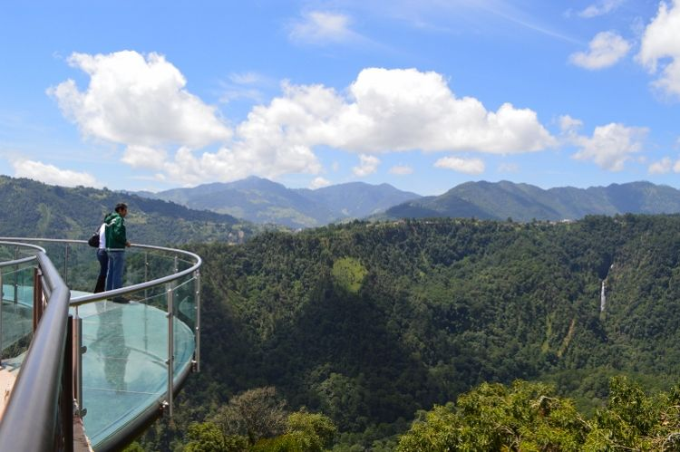
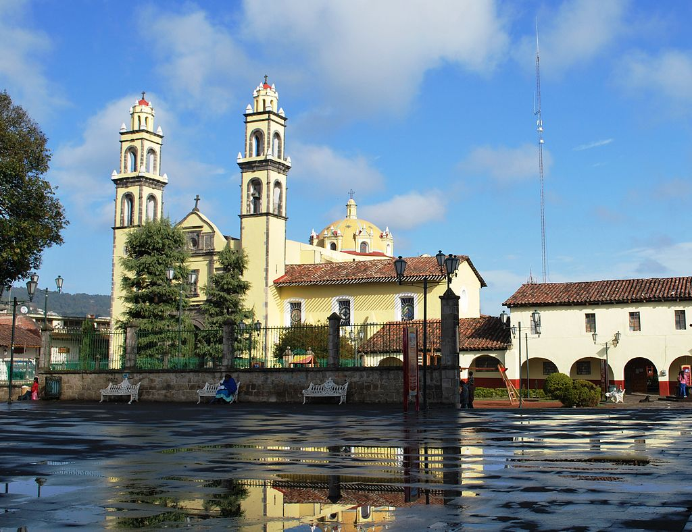

Zacatlán
Zacatlán, también llamado Zacatlán de las manzanas, es un pequeño pueblo ubicado en Puebla al noroeste del estado.
Fue declarado Pueblo Mágico en 2011 haciendo que el auge de este pintoresco pueblo creciera, así como sus atractivos.

¿Tiempo de llegada?
AVISO
Su única vía de acceso es vía carretera.
Historia

Fundación
El primer indicio que se tiene de Zacatlán es del año 1325 aproximadamente, el pueblo fue fundado por Tenochcas el cual nombraron el pueblo debido a su abundancia en el zacate, (Zacatl – Zacate, Tlan - Lugar). Posteriormente, con la llegada de los españoles, el lugar fue tomado por Hernán López de Ávila, quien con ayuda de los franciscanos evangelizo a los pobladores.
Por ello, aún podemos encontrar objetos prehispánicos, así como la presencia de pasajes bíblicos escritos en nahuatl.
Por ello, aún podemos encontrar objetos prehispánicos, así como la presencia de pasajes bíblicos escritos en nahuatl.
Lo que siguio después
Fue punto clave para la batalla contra la intervención francesa en 1838, donde los pobladores ayudaron a las fuerzas armadas con lo que tenían para combatir contra los franceses. Fue capital del estado de Puebla en 1847 hasta que el titulo fue devuelto a la ciudad de actual Heroica Puebla de Zaragoza.
Fue base de los federalistas cierto tiempo durante la revolución mexicana, por lo cual provocó que se convirtiera en como zona de guerra durante la misma.
Fue base de los federalistas cierto tiempo durante la revolución mexicana, por lo cual provocó que se convirtiera en como zona de guerra durante la misma.


Actualidad
En 2011, fue declarado Pueblo Mágico debido a la historia que envuelve el lugar, su arquitectura, sus zonas naturales, gastronomía y cultura social.
Clima
Zacatlán se caracteriza por ser frio y fresco, debido a la posición geográfica donde se encuentra.
Es común que, en algunas noches, en los amaneceres y en invierno el pueblo es envuelto en niebla y ligera llovizna. Su temperatura suele estar entre los 14 °C y 23 °C aproximadamente.
Es común que, en algunas noches, en los amaneceres y en invierno el pueblo es envuelto en niebla y ligera llovizna. Su temperatura suele estar entre los 14 °C y 23 °C aproximadamente.
Mejor época para visitar
El mejor momento para visitar este pueblo es en verano (Junio – Septiembre), el leve calor es ideal para acompañarlo con un refresco de manzana del pueblo.
Para los de Gustos más Frescos
Sin embargo, a mi me agrada más visitarlo en otoño (Septiembre – Diciembre) e invierno (Diciembre – Marzo) debido a que su clima se vuleve más frío y es buen pretexto para poder comer pan con cafe de olla, atole o chocolate caliente.
Para los fanaticos de la flora
Aunque si lo que quieres es ver su punto de esplendor, cuando las plantas frutales empiezan a dar flores y el clima no está en un punto intermedio, sería en primavera (Marzo – Junio).
Economía
Una de las cualidades que tiene Zacatlán, es su tierra fértil, lo que lo hace un perfecto lugar para las cosechas. El pueblo suele cosechar diferentes tipos de frutas, pero su más preciado fruto es la manzana, por esto se llama Zacatlán de las manzanas. Lo que lo convierte en uno de los principales exportadores de esta fruta en México, además de ser uno de los principales productores de sidra, vino de frutas y refrescos frutales de la Republica.
De igual manera, es especializan en la fabricación de relojes, los relojes que se encuentrán en todo el pueblo son principalmente fabricados en Zacatlán.
Su segundo pilar económico, es el turismo, el cual tuvo un mayor impulso luego de su declaración como pueblo mágico en 2011, el cual se enfoca principalmente en hospedaje, gastronomía y atractivos turísticos.
- 
- 
- 
- 
- 
- 
- 
- 
- 
- 